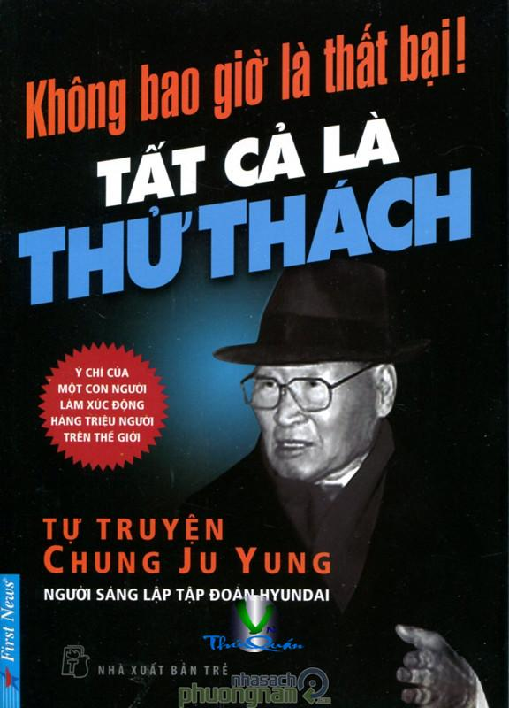

« Back
Không Bao Giờ Là Thất Bại
By Chung Ju Yung

Về Một Con Người Dám Thực Hiện Ước Mơ
LỜI NÓI ĐẦU
TIỂU SỬ THEO THỜI GIAN
CON TRAI CỦA MỘT NGƯỜI NÔNG DÂN
CUỘC HÀNH TRÌNH CÙNG VỚI BẠN VÀ 47 CHON LÀM LỘ PHÍ
HAI THÁNG CỰC NHỌC TẠI CÔNG TRÌNH ĐƯỜNG SẮT
BỎ NHÀ LẦN THỨ HAI - THÊM MỘT LẦN THẤT BẠI
LẤY CÁI TÁT CỦA NGƯỜI LÁI ĐÒ LÀM ĐỘNG LỰC
TRỘM 70 WON TIỀN BÁN BÒ VÀ HỌC TRƯỜNG KẾ TOÁN
HỌC “BÀI HỌC CON ẾCH XANH” VÀ TRỞ LẠI SEOUL
THỪA HƯỞNG CỬA HÀNG GẠO CHỈ BẰNG MỘT THỨ DUY NHẤT: UY TÍN
THÁNG 1 NĂM 1950, KHỞI ĐẦU CỦA CÔNG TY XÂY DỰNG HYUNDAI
TRÃI QUA CUỘC HỖN LOẠN 25 THÁNG 6 CÙNG VỚI EM TRAI
TỔNG THỐNG EISENHOWER THĂM HÀN QUỐC VÀ LỜI KHEN “TUYỆT VỜI”
CHỈ CÓ THỬ THÁCH CHỨ KHÔNG CÓ THẤT BẠI
CHUYỂN HỌA THÀNH PHÚC...NHƯNG TRANG THIẾT BỊ LÀ VẤN ĐỀ!
THÀNH BẠI CỦA CUỘC ĐỜI CHÍNH LÀ Ở HÀNH ĐỘNG VÀ THỜI GIAN
THỬ THÁCH TRONG MÔI TRƯỜNG CẠNH TRANH KHỐC LIÊT CỦA THỊ TRƯỜNG XÂY DỰNG Ở NƯỚC NGOÀI
“CHỌC KIM VÀO MŨI HỔ” MÀ CHẲNG SỢ
CON ĐƯỜNG CAO TỐC SEOUL - BUSAN VÀ CÔNG TRÌNH ĐƯỜNG HẦM TANGCHE PHỨC TẠP
KHỞI CÔNG XƯỞNG ĐÓNG TÀU ULSAN VÌ NGÀY MAI
BỨC ẢNH CŨ VÀ “PHƯƠNG PHÁP CHÀO HÀNG LẠ ĐỜI NHẤT”
LIÊU CỤC SẮT KIA CÓ NỔI ĐƯỢC HAY KHÔNG?
KIẾM ĐÔLA DẦU LỬA... HƯỚNG TỚI TRUNG ĐÔNG
CÔNG TRÌNH LỚN NHẤT CỦA THẾ KỶ 20
CẢNG CÔNG NGHIÊP DUBAI, VỞ KỊCH ĐẤU THẦU HÙNG TRÁNG
KẾ HOẠCH VẬN CHUYỂN HÀNG LOẠT NGUYÊN VẬT LIÊU, MÁY MÓC - MỘT SỰ MẠO HIỂM DŨNG CẢM
TÔI YÊU NHỮNG NGƯỜI CÔNG NHÂN
BIẾN ĐỔI LỊCH SỬ LÀM THAY ĐỔI BẢN ĐỒ
BUỔI ĐIỀU TRẦN TIÊU CỰC TRƯỚC QUỐC HỘI THỜI CỘNG HÒA THỨ NĂM
MẢNH ĐẤT BÌNH NHƯỠNG VÀ QUÊ HƯƠNG 40 NĂM MỚI ĐẶT CHÂN LẠI
LÝ DO MÀ NGƯỜI HÀN QUỐC ĐƯỢC HOAN NGHÊNH
HÃY TRỞ THÀNH “TẤM GƯƠNG” CHO GIẤC MƠ CỦA CON NGƯỜI
NGƯỜI ĐIỀU HÀNH DOANH NGHIÊP CHỈ LÀ NGƯỜI LÀM THUÊ MÀ THÔI
MONG CHÍNH BIẾN ĐỪNG BAO GIỜ XẢY RA NỮA!
NGÀNH XÂY DỰNG LÀ ĐÒN BẨY THÚC ĐẨY TĂNG TRƯỞNG KINH TẾ
SẼ LÀM RA LOẠI XE Ô TÔ TỐT NHẤT TRÊN THẾ GIỚI
KHAI THÁC SIBERIA VÌ NGÀY MAI
CON ĐƯỜNG KINH TẾ LẤY DÂN SỰ LÀM CHỦ ĐẠO
KINH TẾ VÀ VAI TRÒ CỦA CHÍNH PHỦ
SỨ MỆNH CỦA HYUNDAI
CẦN CÙ VÀ TIẾT KIÊM LÀ NGUỒN VỐN
TẤT CẢ MỌI NGƯỜI PHẢI TRONG SẠCH THÌ XÃ HỘI MỚI TRONG SẠCH
AI LÀ NGƯỜI GIÀU CHÂN CHÍNH?
HÃY LỘT BỎ RÀO CẢN CỦA LỐI SUY NGHĨ CŨ
SUY NGHĨ TÍCH CỰC, KHÔNG BAO GIỜ THẤT BẠI!
“NGƯỜI VỢ BÌNH THƯỜNG”“NGƯỜI CHỒNG TÀI NĂNG”
SỰ BÀO CHỮA CHO NHỮNG ĐỨA CON VẤT VẢ
DOANH NGHIỆP LÀ ĐOÀN THỂ CON NGƯỜI VÌ CON NGƯỜI